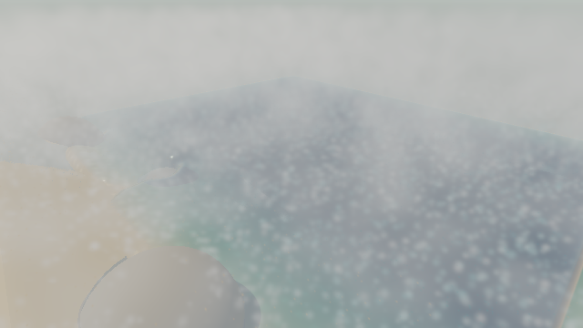
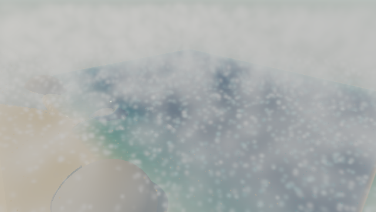
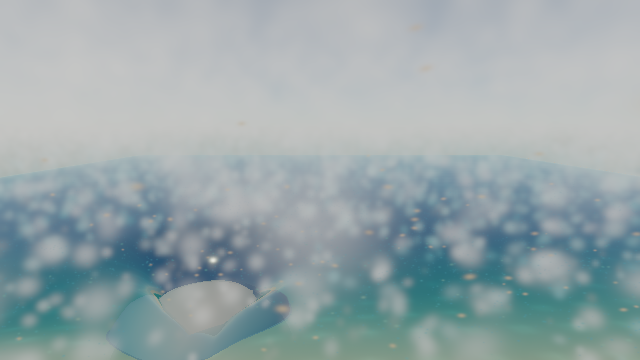
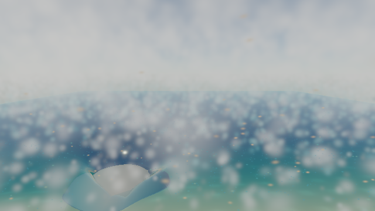

2026-11-07 · local Mac · Codex in-app Chromium · WebGL 2 rendering · CPU physics/reference field solve · 640 × 360 output.
Result: the particle passes are faster, especially above water. Whole-frame speed is still dominated by other work; these measurements do not establish an overall FPS improvement.
Live-only changes: conservative projected-footprint frustum rejection before lighting; optional current opaque-depth rejection; shared SH sky evaluation; one fine-particle lighting target instead of three; spectral extinction/scattering evaluated once per marker; stable particle-ID-based thinning for subpixel grains and soft fine water. Actual covariance, SH response, physical marker counts and simulation remain unchanged. No camera-dependent physics, visibility readback, temporal history or full-screen jitter.
Frustum, shader reuse and sparse drawing default on. Occlusion defaults off: the extra depth sampling did not pay for itself in these open views. Its footprint includes antialias support and a depth margin; uncertain or large footprints fall back to ordinary per-pixel clipping. Water and glass are not opaque blockers.
Median milliseconds, timer queries around actual drawing, alternating reference/exact/sparse/occlusion with nine retained samples per mode and view. Synthetic busy workload: 8,192 sand slots, 32,768 fine-water slots; persistent sea foam also tested separately on its fixed 96² grid. “Both” means sand plus fine water, not persistent sea foam. Default sparse mode trades local sampling noise for less work.
| View | Particles | Reference ms | Default ms | Time saved |
|---|---|---|---|---|
| beach | sand | 0.494 | 0.425 | +14.0% |
| beach | foam | 7.952 | 4.180 | +47.4% |
| beach | sea | 1.029 | 1.112 | -8.0% |
| beach | both | 8.106 | 4.398 | +45.7% |
| shore | sand | 0.460 | 0.366 | +20.3% |
| shore | foam | 5.632 | 3.430 | +39.1% |
| shore | sea | 2.914 | 2.900 | +0.5% |
| shore | both | 6.086 | 3.848 | +36.8% |
| underwater | sand | 0.593 | 0.493 | +16.9% |
| underwater | foam | 3.191 | 3.243 | -1.6% |
| underwater | sea | 4.619 | 3.380 | +26.8% |
| underwater | both | 4.111 | 4.231 | -2.9% |
Elapsed CPU submission + GPU completion milliseconds for the same frozen scene, including all other passes. The final two runs use balanced ABBA ordering and 16 retained samples per mode/view. Run 1 has five. These include synchronization and CPU work; they are not sums of particle GPU timings. Mixed/noisy results below are why no full-scene FPS gain is claimed. Physics is unchanged and no simulation-speed improvement is claimed.
| Run | View | Reference ms | Default ms | Time saved |
|---|---|---|---|---|
| run-1.json | beach | 90.00 | 93.30 | -3.7% |
| run-1.json | shore | 105.50 | 94.10 | +10.8% |
| run-1.json | underwater | 183.40 | 175.10 | +4.5% |
| run-2.json | beach | 89.95 | 96.15 | -6.9% |
| run-2.json | shore | 89.20 | 89.65 | -0.5% |
| run-2.json | underwater | 167.80 | 166.95 | +0.5% |
| results.json | beach | 91.75 | 85.00 | +7.4% |
| results.json | shore | 88.80 | 91.55 | -3.1% |
| results.json | underwater | 161.95 | 168.80 | -4.2% |
Exact mode (sparse off) worst mean absolute linear image difference: 1.14e-07; no image component differs by more than 0.002. Persistent sea foam matches to floating-point tolerance. Repeating an identical sparse frame gives zero pixel difference: the pattern does not change with a frame timer. Sparse whole-image mean brightness differs by roughly 1% or less in these fixtures; local changes are larger, as the images show. These are raw linear-image checks, not a claim of perceptual identity under every lighting condition.




Final bounded playback: 12 steps, one glass spawn halfway, no context loss; compiled programs 54 → 54. Short playback is a stability smoke check, not a long-duration stress guarantee. All new variants are prepared sequentially before playback; only one GPU completion job is outstanding.
The live clones also replace signed pow(x, 2) covariance expressions with x*x. Negative-base pow is undefined by the GLSL specification; this was a genuine cross-variant stability hazard. Historical shader sources are unchanged.
Validation: 40 relevant numerical/renderer tests passed; production build passed. Final raw measurements · Run 1 · Run 2 · Bounded reproducible test · Prioritized development backlog